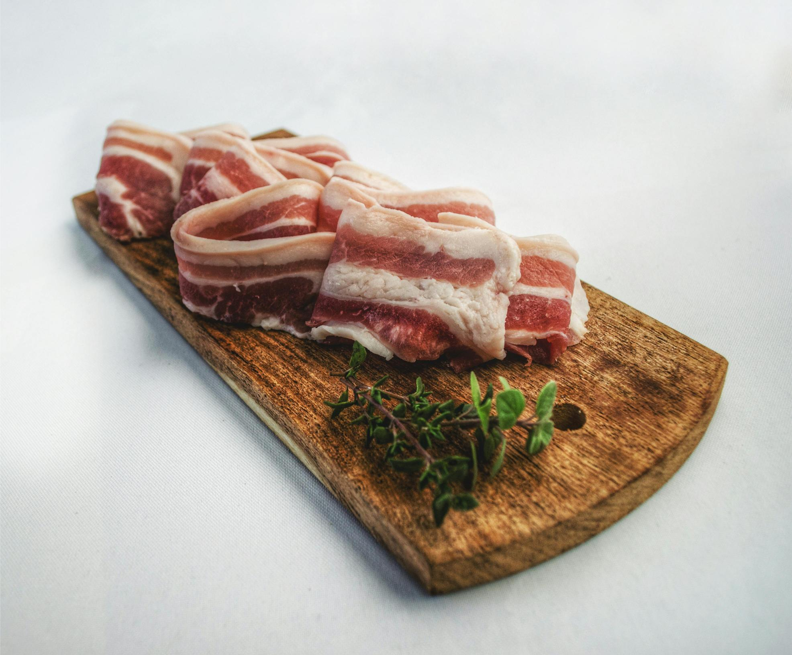

Abbington Farm Park
Fresh produce, friendly animals, and countryside fun
Opening times
| Mon–Sat | 8:00 am – 5:00 pm |
|---|---|
| Sun | 9:00 am – 4:30 pm |
Address:
Abbington Farm, Abington, Biggar ML12 6RH
Tel: 01864 502501
Welcome to our farm shop website
Find everything you need about our fresh produce and countryside attractions. The farm shop offers jams and preserves, free-range eggs laid by our own chickens, outdoor-reared pork with distinctive flavour, award-winning pies with fillings such as apricot or blackberry, hand-made chocolates, local honey and marmalade, homemade breads and cakes, plus locally sourced fruit juices, wines, beers, and ciders. We also sell fresh vegetables grown in our garden.


© 2025 Abbington Farm Park | Abbington, Biggar ML12 6RH | Tel: 01864 502501